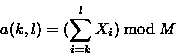
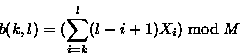
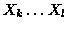
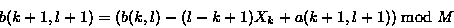

The weak rolling checksum used in the rsync algorithm needs to have the property that it is very cheap to calculate the checksum of a buffer X2 .. Xn+1 given the checksum of buffer X1 .. Xn and the values of the bytes X1 and Xn+1.
The weak checksum algorithm we used in our implementation was inspired
by Mark Adler's adler-32 checksum. Our checksum is defined by


where s(k,l) is the rolling checksum of the bytes

. For simplicity and speed, we use M = 216.The important property of this checksum is that successive values can be computed very efficiently using the recurrence relations

Thus the checksum can be calculated for blocks of length S at all possible offsets within a file in a ``rolling'' fashion, with very little computation at each point.
Despite its simplicity, this checksum was found to be quite adequate as a first level check for a match of two file blocks. We have found in practice that the probability of this checksum matching when the blocks are not equal is quite low. This is important because the much more expensive strong checksum must be calculated for each block where the weak checksum matches.